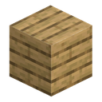

エネルギー貯蔵庫
alaindustrial:battery_box
概要
エネルギー貯蔵庫はこのモード最初の貯蔵ブロックで、発電機から EU/FE を蓄え、機械へ送り出します。ソーラーパネルの昼間の発電を夜通し機械へ給電できるのは、このブロックのおかげです。
ミニ例： 昼はパネルが貯蔵庫を満たし、夜は貯蔵庫が粉砕機を動かします。これがなければ、機械は日が沈むと同に止まってしまいます。
これはバッファであり、発電源ではありません——単体では EU/FE を生み出しません。入出力の両側とも LV に制限されているため、接続した LV 機械を決して過負荷にしません。
エネルギー
| 項目 | 値 |
|---|---|
| 容量 | 20 000 EU/FE |
| 最大入力 | 32 EU/FE/t（LV） |
| 最大出力 | 32 EU/FE/t（LV） |
両側とも LV です。これより大きな流入があっても自身の上限しか受け取りません——余剰は通過せず、何も壊れません。出力は常に LV なので、どんな LV 機械に対しても安全です。
2 つの向かい合う面を通してのみ接続します：一方がエネルギーを受け取り（発電機側へ）、もう一方が出力します。残り 4 面は接続しません。
貯蔵庫は同じネットワークの入力と出力の両方にケーブルを接続できます——エネルギーをぐるぐると回すことも、損失で焼き切ることもありません。機械が発電機の発電量を満たすまで、貯蔵庫は出力のみを行い、機械が飽和するか発電機が需要を上回ると充電を始めます。これはネットワークがエネルギーを分配する際の「機械優先、貯蔵库が後」という優先順位と同じです。
テレポーターと充電ステーションへの給電（）
機械や隣接する貯蔵庫に加えて、貯蔵库はもう一つのクラス——「ファンド」ブロック：テレポーターと充電ステーション——にも給電します。これらは即時に動作するわけではなく自身のための蓄電を行うため、意図的に遅い別の経路でエネルギーを受け取ります：
速度は12 EU/FE/ティック（銅ケーブルと同じ）； 貯蔵庫は残量が半分を超えた分のみを出力し、それを下回ると経路は閉じられます。
この閾値は飾りではありません：テレポーターのバッファは貯蔵库の 25 倍あり、閾値がなければ 1 基のステーションが拠点の全貯蔵库を吸い尽くしてしまいます。ファンドを一気に満たしたい場合は、貯蔵庫を隣接させてください：直接接触には閾値も速度制限もありません。
カスケード：同じネットワーク内の複数の貯蔵庫
バンクの拡張は簡単です——もう一つ貯蔵库を置き、同じネットワークに接続するだけです。より充填された貯蔵庫が、充填率が揃うまで、より空いている貯蔵库へ自動的に給電します。貯蔵库は「まず 1 台目を満たし、それから 2 台目」ではなく、同時に平均化します：20 000 EU/FE の貯蔵庫 2 台（片方に 10 000、もう片方が空）は、それぞれ約 5 000 に収束します。
カスケードは機械がすでに満たされている時だけ動作します——稼働中の機械は常に隣の貯蔵库より先にエネルギーを受け取ります。カスケード自体は平均化のところで停止します：1 ティックあたり差分の半分が送られ、ごく小さな差は無視されるので、貯蔵库同士でエネルギーをあちこち行き来させる「波打ち」は起きません。
知っておくべき代償。 送電はケーブルを経由し、通常の距離損失を支払います。これは平均化のための一時的な代償で、持続的な漏れではありません——比率が揃うと流れは止まります。しかし長い路線では無視できません：銅ケーブル 30 ブロックを経ると、受電側に届くのは送電量の約半分です。バンクが大きな拠点に散らばっているなら、貯蔵库同士を隣接させたほうが安上がりです。
カスケードのルールはケーブルがなくても成り立ちます：2 台の貯蔵库を出力と入力で隣接させれば、同じように振る舞います。これは 2 つの異なる挙動ではなく、同じ挙動です。
カスケードに参加するのは貯蔵库だけです。テレポーターも貯蔵ブロックですが、余剰から自力で蓄電し、貯蔵库からは自動では満たされません——満杯の貯蔵库がプレイヤーの知らない間に流出するのを防ぐためです。
インベントリ
携帯用 EU/FE アイテム（バッテリーポーチ、エネルギーパック）用のスロットが 1 つ：
| スロット | 役割 |
|---|---|
| 充電 | バッファから携帯用 EU/FE アイテムを充電 |
このスロットは充電専用です——このブロックを経由して貯蔵库へ充電を戻すことはできません。ホッパーは使用しません：GUI からのみ動作する手動スロットです。
インターフェース
1 画面：エネルギー残量、入出力速度、充電スロット。
ブロックの性質
通常の固体ブロックです。任意のツルハシで壊せ、破壊時に充電量を保持します——運搬中にエネルギーは失われません。
| 項目 | 値 |
|---|---|
| ツール | ツルハシ |
| 破壊時に充電量を保持 | はい |
レシピ
これは貯蔵ブロックであり、加工機ではないため、加工レシピはありません。
進行
貯蔵系列の最初の段階です。拠点が成長するにつれて LV バッファでは足りなくなり、後に上位ティア（MV/HV）の貯蔵ブロックが登場します。
関連項目
発電機——典型的な充電源。 ソーラーパネル——昼間に貯蔵库を満たします。
クラフト
定型クラフト
▶
エネルギー貯蔵庫
用途
定型クラフト
▶
強化エネルギー貯蔵庫